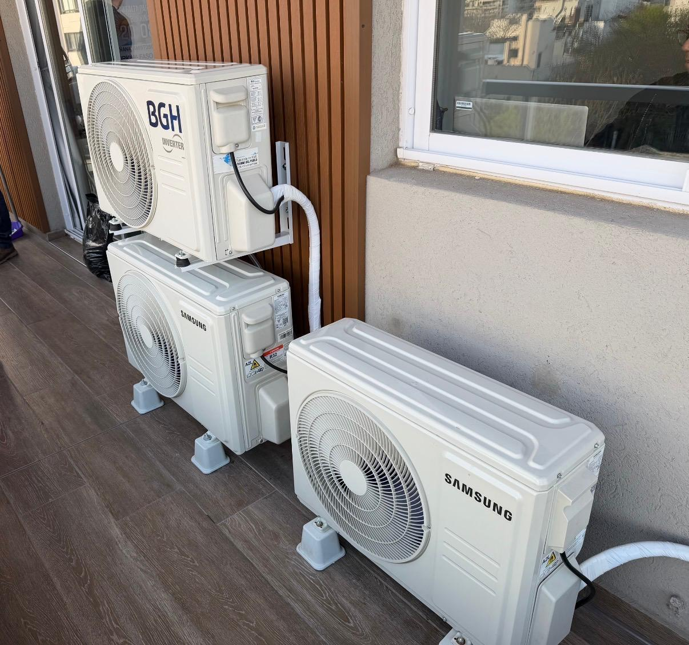
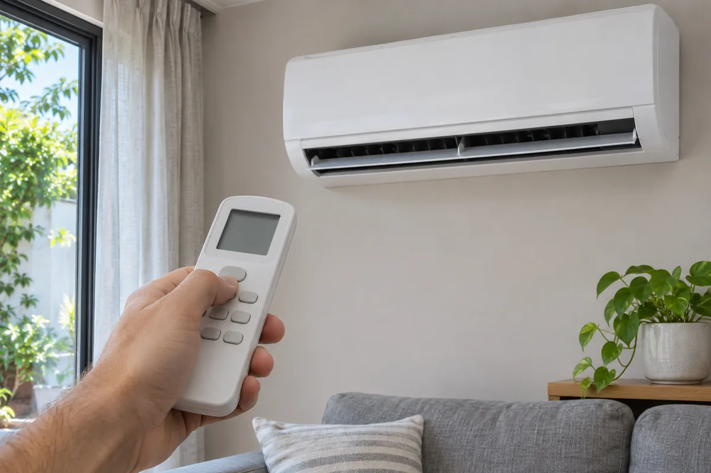

GUÍA 05 · CLIMATIZACIÓN
Mantenimiento de aire acondicionado: qué consultar si cambió su funcionamiento
Qué datos reunir si el equipo enfría menos, hace un ruido nuevo o gotea en el interior.
Empezá por acá ↓
anotá cuándo empieza.
Prendés el aire como todos los días, pero el ambiente tarda más en enfriarse. O aparece un ruido que antes no estaba. Esos cambios son útiles para orientar una consulta, sobre todo si podés contar cuándo empezaron y en qué condiciones se repiten.
En esta guía vas a encontrar qué observar desde un lugar seguro, cómo describir el cambio con ejemplos y qué preguntar antes de coordinar una visita. Si solo te acordás de una cosa, que sea esta: el contexto del síntoma vale más que una suposición sobre su causa.
01 / CLIMATIZACIÓN
Qué cambió y cuándo
Contá qué observaste y cómo se compara con el funcionamiento habitual. Por ejemplo, si el equipo enfría al principio y después baja el rendimiento, o si el ruido aparece al arrancar. Si muestra un código, anotá el texto exacto o sacá una foto de la pantalla.
Si hay agua a la vista, indicá si aparece debajo de la unidad interior o en otro punto. Si es un ruido, describilo con tus palabras: un golpeteo, una vibración o un zumbido son observaciones que se entienden mejor si aclarás en qué momento se escuchan.
Enfría menos
Contá si pasa desde el arranque o después de un rato.
Hace ruido
Indicá si aparece al encender, al apagar o mientras funciona.
Aparece agua
Describí de qué lado se ve y cuándo empezó.
02 / CLIMATIZACIÓN
Qué estaba pasando en el ambiente
Anotá el modo seleccionado, la temperatura configurada y si el cambio se repite en distintos momentos del día. También ayuda saber si hubo una mudanza del equipo, una obra o un servicio reciente. Un dato aislado rara vez alcanza para saber cuál es la causa.
Por ejemplo, «en modo frío, a la tarde y después de media hora» ubica mejor el problema que «enfría poco». Si cambiaste la configuración recientemente, contá desde cuándo. Anotá lo que ya observaste durante el uso normal.

03 / CLIMATIZACIÓN
Qué llevar a la consulta
Si el modelo figura en el control, en el manual o en una etiqueta accesible, compartilo junto con la antigüedad aproximada del equipo y cuándo recibió mantenimiento por última vez. Una foto o un audio breve puede ayudar a describir el síntoma. Tomalos desde un lugar seguro, sin abrir el equipo ni acceder a la unidad exterior en altura.
Si no encontrás la etiqueta o el manual, podés explicar el síntoma igual. Vale más contar el cambio con claridad que demorar la consulta buscando datos en un lugar de difícil acceso.
Qué incluir en tu mensaje
- Equipo y ambiente
Modelo si lo tenés, ambiente donde está y antigüedad aproximada.
- Síntoma y momento
Qué cambió, cuándo comenzó y con qué configuración lo notaste.
- Antecedentes
Cuándo fue el último servicio y si hubo una obra o un traslado reciente.
04 / CLIMATIZACIÓN
Qué preguntar sobre el mantenimiento
Preguntá qué tareas incluye la visita y si el síntoma requiere una revisión aparte. Si se propone cambiar una pieza o intervenir el circuito, pedí que te expliquen qué observaron, qué comprobaciones hicieron y qué queda por confirmar. Así podés decidir con un alcance claro.
También ayuda preguntar qué datos puede aportar la visita y qué condiciones deben confirmarse antes de avanzar con una reparación.
Mantenimiento previsto
Preguntá qué tareas contempla el servicio y qué necesita tener accesible el técnico.
Revisión por un síntoma
Describí el cambio y preguntá cómo se determinaría el siguiente paso.
05 / CLIMATIZACIÓN
Cuándo dejar de usarlo
Si notás olor a quemado, humo o que salta una protección eléctrica al encender el equipo, dejá de usarlo y pedí una revisión profesional. Evitá volver a encenderlo repetidas veces para comprobar si el problema se repite. Si hay agua cerca de elementos eléctricos, no manipules el equipo ni los elementos mojados.
Preguntas frecuentes
¿Me sirve mandar una foto del goteo?
Sí, si podés tomarla desde un lugar seguro. Indicá dónde aparece el agua y cuánto tiempo llevaba encendido el equipo.
¿Una limpieza resuelve cualquier pérdida de rendimiento?
El alcance depende de lo que se observe en la revisión. Preguntá si el mantenimiento previsto cubre el síntoma o si hace falta una evaluación adicional.
¿Qué pasa si el código desaparece al apagar el equipo?
Compartí el código si lo pudiste anotar y contá cuándo apareció. No hace falta provocar el error para volver a verlo.
DE LA GUÍA A LA CONSULTA
¿Tu aire cambió de funcionamiento?
Contanos qué notaste, cuándo empezó y en qué zona estás. Si tenés a mano el modelo del equipo, también podés incluirlo.
CABA y alrededores · Cobertura a confirmar